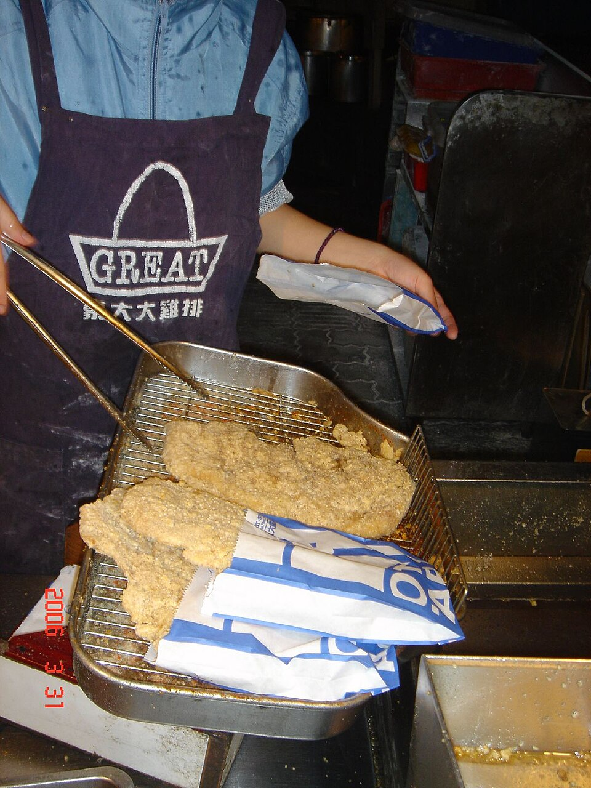
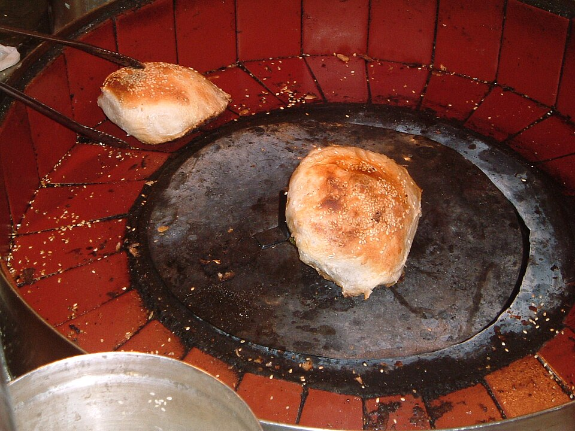
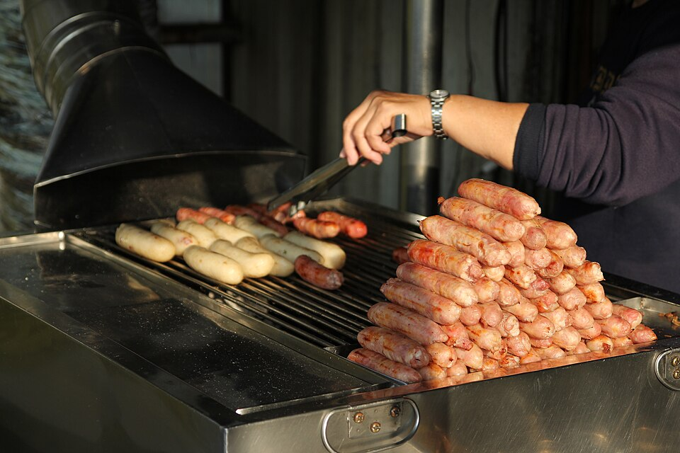
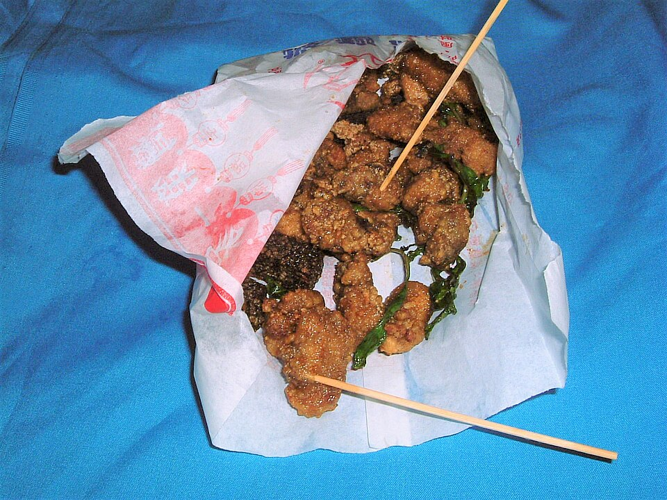
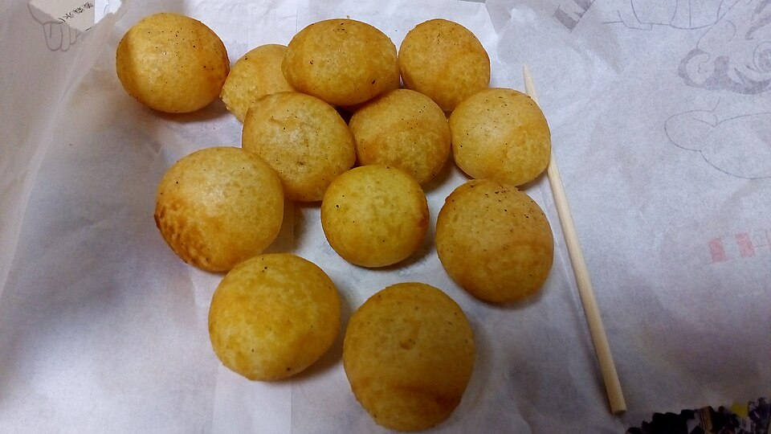

大雞排

雞胸肉拍薄醃製後裹粉油炸，外皮酥脆、肉質多汁，撒上胡椒粉更加分。
- 口味：原味、辣味、梅粉
- 小提醒：剛起鍋很燙，稍等一下再吃
夜市是台灣最熱鬧的風景。天黑之後，攤販一攤接著一攤亮起燈，空氣中飄著炸物與醬汁的香氣，邊走邊吃就是逛夜市最道地的方式。

雞胸肉拍薄醃製後裹粉油炸，外皮酥脆、肉質多汁，撒上胡椒粉更加分。

麵皮包入胡椒豬肉餡與大量青蔥，在炭爐中烤到外皮酥香，內餡鹹香帶辣。

烤過的糯米腸切開，夾入台式香腸，再加上酸菜、蒜片與醬料。

雞肉切塊醃製油炸，和九層塔一起起鍋，再撒上胡椒鹽，是宵夜首選。

地瓜泥與地瓜粉揉成小球，下鍋時不斷按壓，炸成中間空心的金黃小球。
| 城市 | 夜市 | 特色 |
|---|---|---|
| 台北 | 士林夜市 | 台北規模最大的夜市之一，觀光客必訪 |
| 饒河街夜市 | 入口的胡椒餅大排長龍 | |
| 台中 | 逢甲夜市 | 創意小吃的發源地，鄰近大學人潮多 |
| 台南 | 花園夜市 | 只在固定日子營業，攤位數量眾多 |
| 高雄 | 六合夜市 | 位於市中心，海鮮與木瓜牛奶很有名 |
| 營業時間與營業日以各夜市現場公告為準。 | ||
本頁照片皆來自維基共享資源（Wikimedia Commons），依原作者授權使用。